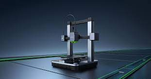

Impresión 3D: Fabricando el Futuro, Capa por Capa
La Impresión 3D, o Manufactura Aditiva, construye objetos tridimensionales depositando material capa sobre capa a partir de un modelo digital. Transforma ideas digitales en objetos físicos tangibles.
Desde prototipos rápidos en ingeniería hasta implantes médicos personalizados, pasando por herramientas industriales y piezas aeroespaciales, la impresión 3D está revolucionando la producción con materiales como plástico, resina, metal, cerámica y biomateriales.
Tecnologías y Fronteras
Tecnologías Comunes
- FDM/FFF (Modelado por Deposición Fundida): La más accesible, extruye filamento plástico fundido. Ideal para prototipos y educación.
- SLA (Estereolitografía): Utiliza un láser UV para curar resina líquida fotosensible. Alta precisión y detalle.
- SLS (Sinterización Selectiva por Láser): Fusiona polvo (plástico, metal) con un láser. Piezas funcionales y duraderas.
- DLP (Procesamiento Digital de Luz): Similar a SLA pero cura capas enteras a la vez con un proyector. Más rápida.
Avances Notables
- Impresión 3D en Metal: Fabricación directa de piezas metálicas complejas para industrias críticas (aeroespacial, automotriz).
- Multimaterial y Color: Impresoras capaces de combinar diferentes materiales y colores en un solo objeto.
- Bioimpresión: Creación de estructuras celulares, tejidos e incluso órganos utilizando biotintas con células vivas. Un campo con enorme potencial médico.
- Nanotecnología: Integración a nanoescala para crear materiales con propiedades mejoradas (resistencia, conductividad).
- Impresión a Gran Escala: Desarrollo de impresoras 3D para construir casas, puentes y otras estructuras grandes.